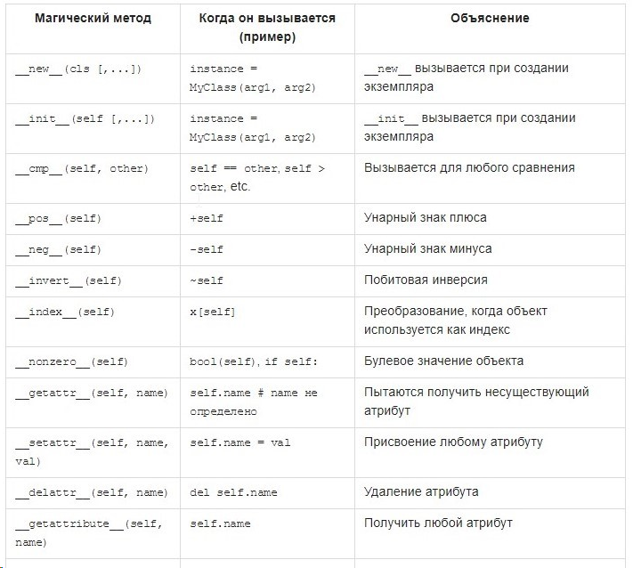
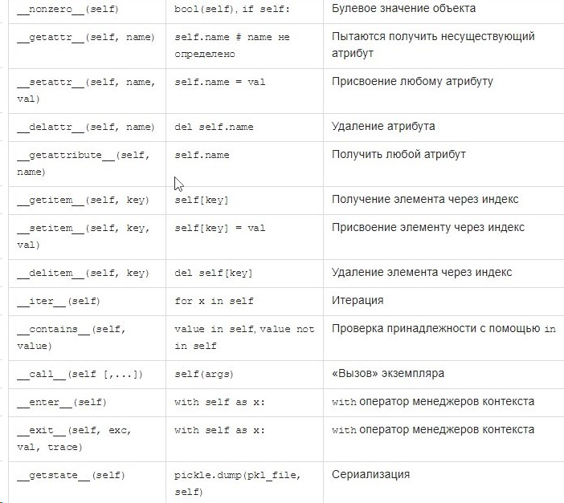
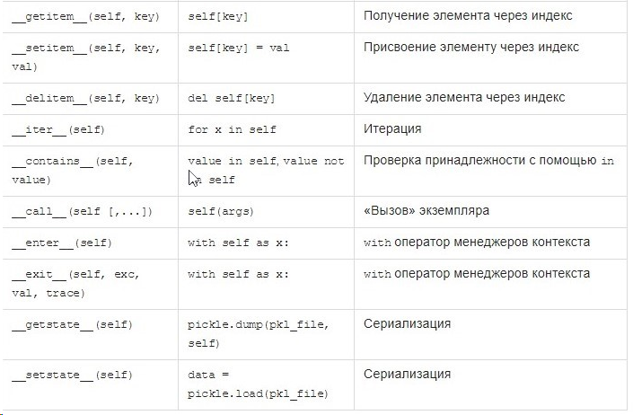

Дополнение 1: Как вызывать магические методы
Некоторые из магических методов напрямую связаны со встроенными функциями; в этом случае совершенно очевидно как их вызывать. Однако, так бывает не всегда. Это дополнение посвящено тому, чтобы раскрыть неочевидный синтаксис, приводящий к вызову магических методов.



|
Магический метод |
Когда он вызывается (пример) |
Объяснение |
|
__new__(cls [,...])instance = MyClass(arg1, arg2)__new__ вызывается при создании экземпляра__init__(self [,...])instance = MyClass(arg1, arg2)__init__ вызывается при создании экземпляра__cmp__(self, other)self == other, self > other, etc.Вызывается для любого сравнения__pos__(self)+selfУнарный знак плюса__neg__(self)-selfУнарный знак минуса__invert__(self)~selfПобитовая инверсия__index__(self)x[self]Преобразование, когда объект используется как индекс__nonzero__(self)bool(self), if self:Булевое значение объекта__getattr__(self, name)self.name # name не определеноПытаются получить несуществующий атрибут__setattr__(self, name, val)self.name = valПрисвоение любому атрибуту__delattr__(self, name)del self.nameУдаление атрибута__getattribute__(self, name)self.nameПолучить любой атрибут__getitem__(self, key)self[key]Получение элемента через индекс__setitem__(self, key, val)self[key] = valПрисвоение элементу через индекс__delitem__(self, key)del self[key]Удаление элемента через индекс__iter__(self)for x in selfИтерация__contains__(self, value)value in self, value not in selfПроверка принадлежности с помощью in__call__(self [,...])self(args)«Вызов» экземпляра__enter__(self)with self as x:with оператор менеджеров контекста__exit__(self, exc, val, trace)with self as x:with оператор менеджеров контекста__getstate__(self)pickle.dump(pkl_file, self)Сериализация__setstate__(self)data = pickle.load(pkl_file)Сериализация |
||